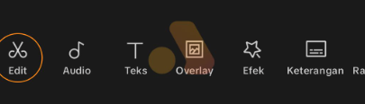
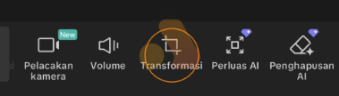
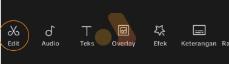
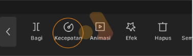
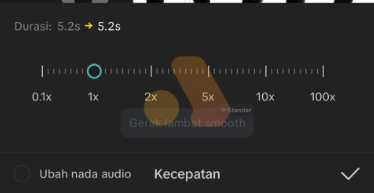
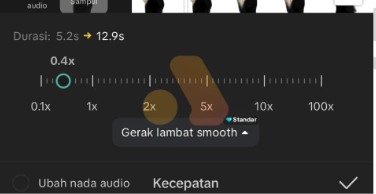

üìπ Modul CapCut
Untuk Konten Media Sosial - Dilesin Academy
üé¨ Pengenalan CapCut
Di tengah perkembangan era digital yang semakin berkembang, sudah tidak dapat dipungkiri lagi bahwa kemampuan untuk mengedit video adalah keterampilan yang sangat penting di zaman ini. Karena apa? karena dalam konteks editing video sangat penting untuk semua jenis pekerjaan, seperti membuat konten promosi, menyimpan kenangan penting, atau membuat konten kreatif lainnya. Oleh karena itu, menguasai kemampuan ini di zaman sekarang sangat penting.
CapCut adalah aplikasi pengeditan video yang dikenal karena kemudahan penggunaan dan fitur-fiturnya yang luar biasa. Awalnya dirancang untuk perangkat seluler, versi desktopnya kini tersedia untuk pengguna yang ingin melakukan pengeditan video di layar yang lebih besar. Versi desktop memiliki berbagai alat pengeditan yang lebih luas dan fleksibel, yang cocok bagi kreator konten yang membutuhkan kontrol lebih banyak daripada versi selulernya.
⚖️ Kelebihan & Kekurangan CapCut
Kenapa CapCut adalah pilihan terbaik? Meskipun Premiere Pro, After Effects, dan Da Vinci Resolve semuanya tersedia. Kenapa CapCut yang dipilih?
✅ Kelebihan CapCut
- CapCut Gratis - Banyak fitur canggih tersedia gratis
- Aplikasi ringan dibandingkan DaVinci Resolve, Adobe Premiere Pro
- Fitur lengkap: basic editing, efek transisi, chroma key, motion tracking, auto caption
- Menyediakan banyak asset seperti sound effect, musik, dll
❌ Kekurangan CapCut
- Kustomisasi terbatas untuk editing detail seperti masking kompleks
- Beberapa fitur terkunci di versi premium
- Kurang optimal untuk proyek skala besar
- Membutuhkan koneksi internet untuk template dan elemen online
- Tidak mendukung plugin eksternal
üñ±Ô∏è User Interface CapCut
CapCut Mobile hadir untuk memudahkan proses pengeditan secara mobile sesuai dengan perkembangan teknologi dan kebutuhan untuk menghasilkan video berkualitas tinggi. Pengalaman pengeditan CapCut dirancang untuk menjadi mudah dan efektif. Bab ini akan membahas layar utama dan antarmuka pengguna CapCut Mobile saat membuat proyek baru, sehingga kita dapat memaksimalkan aplikasi ini dalam proses pengeditan video.
üè† Home Screen
Saat kita membuka CapCut Mobile, kita pertama kali akan melihat Layar Utama, atau Layar Rumah. Layar ini berisi fitur penting seperti Mendaftar untuk masuk ke akun CapCut, Membuat Proyek untuk memulai proyek baru, dan Perpustakaan Sejarah untuk melihat daftar proyek yang telah kita buat sebelumnya.
✏️ Project Editor
Kita akan masuk ke halaman utama interface pengeditan setelah memilih untuk membuat proyek baru dengan mengklik tombol "PROYEK BARU" Beberapa komponen penting termasuk di halaman ini:
üìÅ Media Library
Semua file media yang digunakan dalam proyek disimpan di sisi kiri layar. Kita dapat mengimpor file baru ke library ini dan menariknya ke timeline untuk diedit.
üëÅÔ∏è Pratinjau
Berada di tengah atas layar untuk melihat hasil editing sementara.
⏰ Timeline
Area di mana kita mengatur dan mengedit video, audio, teks, atau elemen lainnya. Letaknya di bagian bawah layar, serta dapat melakukan proses pemotongan dan pemindahan klip.
üõ†Ô∏è Workspace Editing
Halaman utama yang akan digunakan selama proses editing berlangsung.
üìã Menu
Terletak pada kiri atas, berfungsi untuk menyediakan asset bawaan dari CapCut.
üìê MEMBUAT PROYEK BARU
Langkah pertama dalam proses pengeditan adalah membuat proyek baru. Caranya cukup sederhana:
1.klik tombol proyek baru
2. File yang dipilih akan muncul di media library
3. Berhasil membuat proyek baru
⏰ Menambah Footage Media
Setelah membuat proyek baru, langkah selanjutnya adalah menambah footage baru pada workspace capcut mobile kita. Berikut Langkahnya:
1.Klik ikon media pada menu
2. Pilih ikon Library untuk mengakses lokal storage hp anda
3. Pilih Footage yang diinginkan
4. Kemudian Klik add atau tambah
✂️ Teknik Cut to Cut
Salah satu metode dasar yang paling sering digunakan selama proses pengeditan video, memungkinkan editor untuk memotong bagian video dengan tepat, yang membuat video yang dihasilkan lebih efektif dan sesuai dengan alur cerita yang diinginkan.
üî™ Cut to Cut: Split
Ketika Anda ingin membagi video menjadi beberapa segmen atau klip, fitur split dapat membantu Anda memotong video pada bagian yang diinginkan tanpa menghapus bagian mana pun darinya. Berikut langkahnya :
↩️ Undo dan Redo
Kesalahan atau perubahan yang tidak diinginkan sering terjadi selama proses pengeditan video. Untuk mengembalikan atau mengulangi tindakan sebelumnya, fitur Undo dan Redo sangat penting.
↩️ Pengertian dan Fungsi Undo
Fitur Undo adalah metode untuk mengembalikan perintah yang dapat membatalkan tindakan terakhir yang telah dilakukan.
↪️ Pengertian dan Fungsi Redo
Sebaliknya, fitur Redo digunakan untuk mengulang tindakan yang sebelumnya dibatalkan oleh Undo.
ü™û Mirror, Reverse
Pada CapCut terdapat beberapa fitur seperti mirror, reverse, dan freeze:
ü™û Fitur Mirror
Dengan fitur mirror, kita dapat membalikkan video secara horizontal atau vertikal, menciptakan efek cermin. Fitur ini berguna untuk mengubah perspektif video atau menambahkan variasi visual yang menarik.
⏪ Fitur Reverse
Fitur reverse memungkinkan kita untuk memutar video dari akhir ke awal, menciptakan efek mundur. Efek ini sering digunakan untuk menambahkan elemen kejutan atau menciptakan cerita baru dalam video.
üîÑ Transform
Pada capcut terdapat beberapa fitur Transformasi ("mengubah", yang berarti mengubah bentuk objek yang telah kita masukkan ke dalam Timeline) seperti mirror (cermin), rotation (rotasi), dan ubah ukuran:
Fitur Mirror (Cermin)
Dengan fitur mirror (Cermin), kita dapat membalikkan video secara horizontal atau vertikal, menciptakan efek cermin. Fitur ini berguna untuk mengubah perspektif video atau menambahkan variasi visual yang menarik. Untuk hasil yang lebih kreatif, kita dapat dengan mudah membuat efek simetri atau mencerminkan objek dalam video dengan fitur ini. Berikut langkahnya:
Fitur Rotation (Rotasi)
Fitur rotasi memungkinkan kita untuk memutar video dari awal hingga akhir, menciptakan efek mundur. Efek ini sering digunakan untuk menambahkan elemen kejutan atau menciptakan cerita baru dalam video. Berikut langkahnya:
üìç Fitur Ubah Ukuran
Fitur ini memungkinkan kita dapat mengubah ratio dari footage video kita, ada ratio 1:1, 9:16, dan masih banyak lagi. Agar dapat mengubah ratio berikut langkahnya:
üëª Opacity
Apa sebenarnya Opacity? Seperti yang sudah dijelaskan, Opacity adalah transparansi objek. Jika kita menurunkan nilainya, objek akan semakin pudar hingga hampir tidak terlihat. Sebaliknya, jika nilai Opacity penuh, objek akan terlihat jelas. Berikut langkahnya:
⚡ Mengatur Speed Video
Bab ini akan membahas cara mengatur kecepatan (memperlambat dan mempercepat) di CapCut. Kita akan melihat slider atau pengaturan kecepatan di menu Speed. Jika kita tarik ke atas, video akan diputar lebih cepat. Untuk mempercepatnya, geser slider ke kanan. Jika Anda ingin memperlambatnya, geser slider ke kiri. Semakin ke kiri, semakin lambat video akan diputar. Berikut langkahnya:
1. Klik Menu Edit
2. Kemudian klik icon kecepatan
3. Atur kecepatan sesuai kebutuhan
4. Hasil Perubahan Kecepatan Video
✨ In, Out, Combo Animation
Bab ini akan membahas cara menambahkan animasi pada objek, khususnya cara menggerakkan objek yang sudah dimasukkan ke dalam Timeline. Terdapat tiga opsi: In, Out, dan Combo.
üì• In Animation
Animasi Masuk adalah animasi yang terjadi saat objek mulai muncul. Misalnya, ketika memilih animasi Fade In untuk sebuah objek, objek tersebut akan muncul secara perlahan dari tidak terlihat hingga terlihat.
üì§ Out Animation
Animasi keluar adalah animasi yang terjadi saat objek keluar dari layar. Misalnya, bisa memilih animasi Mini Zoom pada objek, dan objek akan keluar dengan efek zoom yang memperkecil ukurannya secara bertahap.
üîÑ Combo Animation
Kombinasi animasi adalah kombinasi animasi masuk, keluar, dan pergerakan objek selama berada di layar. Misalnya, jika memilih animasi Flip, objek tidak hanya akan bergerak saat masuk dan keluar, tetapi juga akan terus bergerak atau berputar selama objek berada di layar.
üìù Teks
Bab tutorial kali ini akan membahas cara menambahkan teks dan mengatur pengaturannya di CapCut Mobile. Fitur teks sangat penting untuk menambahkan judul, keterangan, atau elemen visual lainnya ke video. Berikut langkahnya:

üé≠ Masking
Masking adalah fitur untuk menyembunyikan sebagian area video dan hanya menampilkan bagian yang kita inginkan dalam bentuk tertentu (lingkaran, persegi, bintang, dll). Berikut Langkahnya:

üîä Volume
Fitur mendasar untuk mengontrol keras atau pelannya suara asli yang ada di dalam klip video Anda. Berikut Langkahnya:
Overlay
Overlay adalah fitur di CapCut untuk menumpuk satu video atau gambar di atas video utama Anda. Ini memungkinkan Anda untuk menampilkan dua atau lebih elemen visual secara bersamaan dalam satu bingkai (frame). Berikut Langkahnya:
Duplikat
Fitur ini berfungsi untuk membuat salinan atau copy yang identik dari sebuah klip video, audio, atau teks. Berikut Langkahnya:
üîÑ Filter
Filter adalah lapisan warna yang diterapkan secara merata ke seluruh klip video Anda. Berikut langkahnya:
Effect
Efek adalah elemen visual tambahan atau manipulasi drastis yang diterapkan pada video Anda. Berikut langkahnya:
üé® Adjustment Color
Saat membuka menu Adjustment, pengguna akan menemukan berbagai pilihan untuk mengatur parameter visual, seperti Brightness (kecerahan), Contrast (kontras), Saturation (saturasi), dan lainnya. Berikut langkahnya: